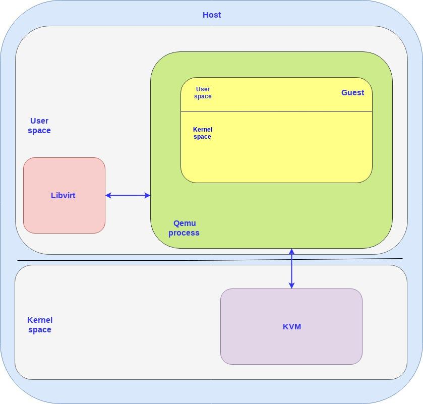
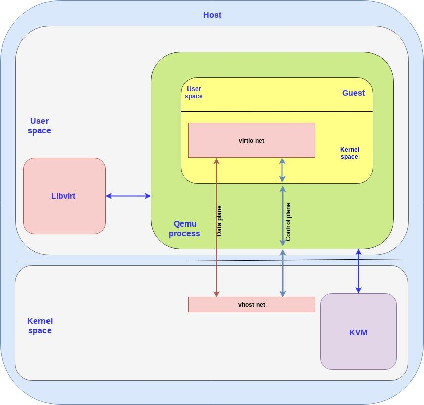
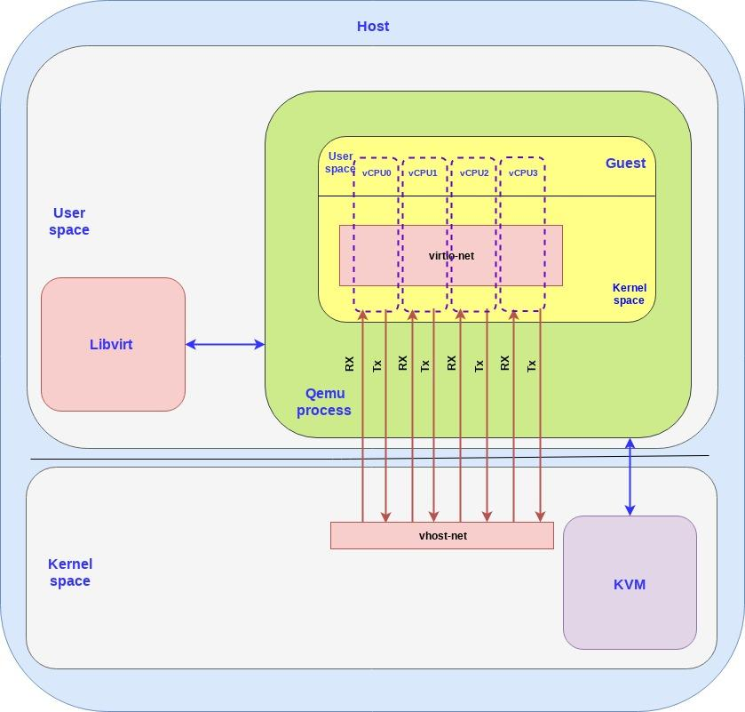
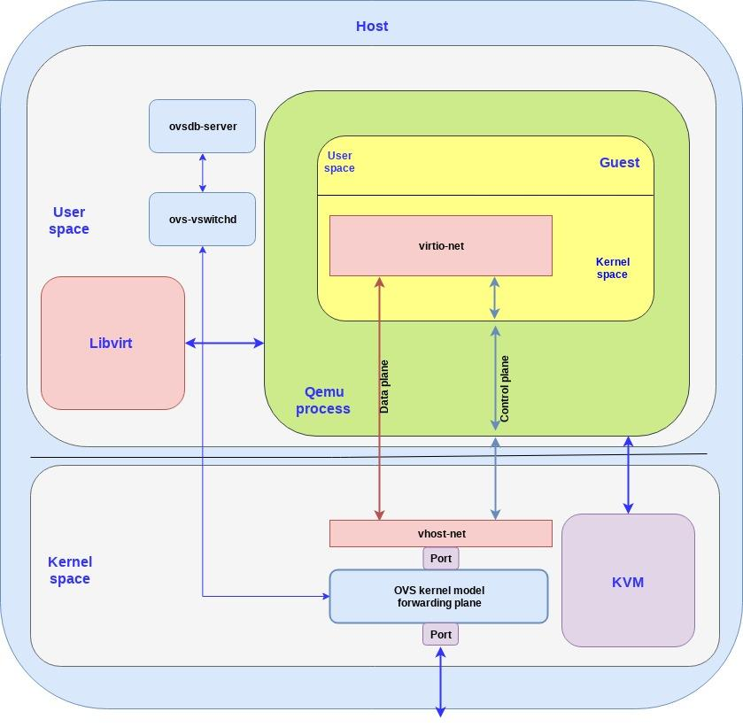

Introduction to virtio-networking and vhost-net¶
Copy from https://www.redhat.com/en/blog/introduction-virtio-networking-and-vhost-net
Virtio was developed as a standardized open interface for virtual machines (VMs) to access simplified devices such as block devices and network adaptors. Virtio-net is a virtual ethernet card and is the most complex device supported so far by
In this post we will provide a high level solution overview of the virtio-networking architecture, based on establishing an interface between the host kernel and the VM guest kernel. We will present the basic building blocks including KVM, qemu and libvirt. We will look at the virtio spec and vhost protocol, and Open vSwitch (OVS) for connecting different VMs and connecting the outside world. The vhost-net/virtio-net based architecture described in this post is the first in a number of virtio-networking architectures which will be presented in a series of posts which differ by their performance, application ease of usage and actual deployments.
After finishing reading this post you should have a clear picture of the terms mentioned and how an application running in a VM can transfer packets to applications running on other VMs and to the outside world. These terms will be the basis for the next
Virtio basic building blocks¶
A guest VM or a guest is a VM installed, executed and hosted on physical machine. The machine hosting the guest VM is referred to as the host and it provides resources to the guest. The guest has a separate operating system running on top of the host operating system through a hypervisor. For example, the host will provide the guest a virtual NIC so the guest machine feels as if it’s using a real NIC, while in reality it’s using a virtual NIC.
The following building blocks create the environment to which virtio later on connects:
KVM - kernel based virtual machine that allows Linux to function as a hypervisor so a host machine can run multiple isolated virtual environments called guests. KVM basically provides Linux with hypervisor capabilities. This means that the hypervisor components such as memory manager, scheduler, network stack, etc. are provided as part of the Linux kernel. The VMs are regular Linux processes scheduled by a standard Linux scheduler with dedicated virtual hardware such as network adapters.
QEMU - A hosted virtual machine monitor that, through emulation, provides a set of different hardware and device models for the guest machine. QEMU can be used with KVM to run virtual machines at near native speed leveraging hardware extensions. A guest is executed via the qemu command line interface (CLI). The CLI provides the capability of specifying all necessary configuration options for QEMU.
Libvirt - an interface that translates XML-formatted configurations to qemu CLI calls. It also provides an admin daemon to configure child processes such as qemu, so qemu will not require root privileges. When Openstack Nova, for example, wants to bring up a VM it uses libvirt to spin up a qemu process for each of the VMs by invoking one qemu process for each VM.
The following diagram shows how these three building blocks come together:
Both the host and the guest contain a kernel space and a user space. As can be seen in the diagram, KVM is running in the host kernel space while libvirt is running in the host user pace.
The guest VM is running inside the qemu process, which is simply a process running on the host user space and communicates with libvirt (user space application) and KVM (host kernel).
A qemu process is created for each guest VM so if you create N VMs you will have N qemu processes, and libvirt will communicate with each of them.
Virtio spec and the vhost protocol¶
When talking about virtio-networking we can separate the discussion into two layers:
Control plane - Used for capability exchange negotiation between the host and guest both for establishing and terminating the data plane.
Data plane - Used for transferring the actual data (packets) between host and guest.
It’s important to distinguish between these layers since they have different requirements (such as performance) and different implementations as will be seen in this and posts to follow.
Fundamentally the data plane is required to be as efficient as possible for moving the packets fast while the control plane is required to be as flexible as possible for supporting different devices and vendors in future architectures.
As mentioned in the introduction, virtio was developed as an interface for the guest to access devices on the host. We can split virito into two parts:
virtio spec - The virtio spec, which is maintained by OASIS, defines how to create a control plane and the data plane between the guest and host. For example the data plane is composed of buffers and rings layouts which are detailed in the spec.
vhost protocol - A protocol that allows the virtio dataplane implementation to be offloaded to another element (user process or kernel module) in order to enhance performance.
The control plane for virtio is implemented in the qemu process based on the virtio spec however the data plane is not. Thus the question is why wasn’t the data plane also implemented in the qemu process in a similar way based on the virtio spec?
The answer is performance.
If we simply implemented the virtio spec data plane in qemu we’d have a context switch for every packet going from the kernel to the guest, and vice versa. This is an expensive operation that adds latency and requires more processing time (remember that qemu is yet another Linux process), so we want to avoid it if possible.
This is where the vhost protocol comes into play, enabling us to implement a data plane going directly from the kernel (host) to the guest bypassing the qemu process.
The vhost protocol itself only describes how to establish the data plane, however. Whoever implements it is also expected to implement the ring layout for describing the data buffers (both host and guest) and the actual send/receive packets.
As will be described in later sections the vhost protocol can be implemented in the kernel (vhost-net) or in the user space (vhost-user). The vhost-net/virtio-net architecture described in this post focuses on the kernel implementation also known as vhost-net.
The vhost-net/virtio-net architecture¶
When we talk about the virtio interface we have a backend component and a frontend component:
The backend component is the host side of the virtio interface
The frontend component is the guest side of the virtio interface
In the vhost-net/virtio-net architecture the components are as follows:
vhost-net is the backend running in the host kernel space
virtio-net is the frontend running in the guest kernel space
The following diagram shows how virtio backend and frontend are mapped to the big picture:
A few points to clarify:
Since both the vhost-net and the virtio-net are running the host and guest kernel space we also call them drivers so don’t be confused if someone writes “vhost-net driver” (same thing).
We have a separate control plane and data plane between the backend and frontend. As explained the control plane simply implements the virtio spec for the vhost-net kernel module and the qemu process to communicate which then goes to the guest and eventually to the virtio-net. Vhost-net uses the vhost protocol to establish the framework which is then used for the data plane to directly forward packets between the host and guest kernel using a shared memory area.
In practice the data plane communication, receive (RX) and transmit (TX), is accomplished through dedicated queues.
To each guest we can associate a number of virtual CPUs (vCPUs) and the RX/TX queues are created per CPU so a more elaborated example with 4 vCPUs would look like this (removing the control plane for simplicity):
Virtio-networking and OVS¶
Up to this point we have described how the guest can pass the packets to the host kernel using the virtio-networking interface. In order to forward these packets to other guest running on the same host or outside the hosts (such as the internet) we use OVS.
OVS is a software switch which enables the packet forwarding inside the kernel. It’s composed of a userspace part and a kernel part:
User space - including a database (ovsdb-server) and an OVS daemon for managing and controlling the switch (ovs-vswitchd).
Kernel space - including the ovs kernel module responsible for the datapath or forwarding plane.
The OVS controller communicates both with the database server and the kernel forwarding plane. To push packets in and out of the OVS we use Linux ports. In our case we have one port that connects the OVS kernel forwarding plane to a physical NIC while the other port connects to the vhost-net backend.
Note that we are trying to simplify things, since in practice there will be multiple NICs connected to OVS via multiple ports and multiple VMs running thus multiple ports connected to a number of vhost-net backends.
Going back to virtio-networking this diagram shows how OVS connects to virtio:
Note the ports mentioned for connecting OVS outside of the host and to the vhost-net and from there to the virtio-net and to the app running in the VM.
This concludes the vhost-net/virtio-net architecture overview, which is based on a host kernel, guest kernel and OVS running in the kernel as well.